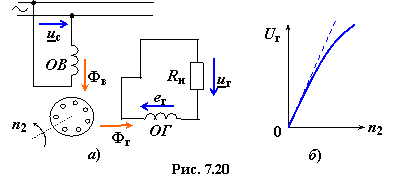
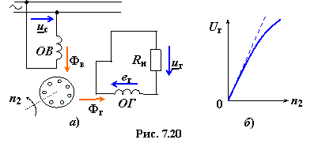

Асинхронные тахогенераторы (АТГ) преобразуют механическое вращение ротора в электрический сигнал (напряжение Uг), пропорциональный частоте
вращения. Основной (выходной) характеристикой АТГ является зависимость Uг = f(n2).
Тахогенераторы предназначены главным образом для следующих целей:
• измерения частоты вращения вала;
• измерения частоты вращения вала;
• выработки ускоряющих и замедляющих сигналов;
• выполнения операций дифференцирования и интегрирования в схемах счётно-решающих устройств.
Конструкция АТГ аналогична конструкции АИД с полым немагнитным ротором. На статоре в пазах уложены две обмотки, сдвинутые в пространстве на 90°. Одна из обмоток ОВ (обмотка возбуждения) постоянно включена в сеть, другая ОГ (генераторная обмотка) присоединяется к нагрузке Rн (рис. 7.20а), т.е. является выходной.


По обмотке ОВ протекает переменный ток, в результате чего создаётся продольный магнитный поток Фв, пульсирующий с частотой напряжения сети f1. При неподвижном роторе идеализированного АИД магнитный поток Фв индуктирует ЭДС ев2 в роторе и ев1 только в обмотке ОВ, так как обмотка ОГ сдвинута относительно обмотки ОВ на 90°. Следовательно, выходное напряжение uг = 0. В реальном АИД в обмотке ОГ наводится небольшая остаточная ЭДС его и на зажимах нагрузки появляется напряжение uг = uго.
Под действием ЭДС eв2 в роторе протекают токи, практически совпадающие по фазе с ЭДС eв2, так как активное сопротивление тонкостенного ротора велико. Созданный МДС ротора продольный магнитный поток компенсируется (как в трансформаторе) МДС обмотки ОВ, а в обмотке ОГ по-прежнему не индуктируется ЭДС и нет выходного сигнала.
При разгоне ротора каким-либо посторонним механизмом в его элементарных условных проводниках, помимо трансформаторной ЭДС ев2, индуктируется еще
пульсирующая ЭДС вращения, вектор которой направлен вдоль продольной оси машины. Созданные этой ЭДС токи и МДС формируют поперечный магнитный поток Фг, который наводит в статорной обмотке ОГ выходной сигнал
uг ≈ eг = C1f1Фгn2 = CEn2,
где CE − коэффициент, зависящий от конструктивных особенностей АТГ.
Таким образом, в идеализированном АТГ ЭДС ег выходной обмотки прямо пропорциональна частоте вращения ротора n2 . Неизменность частоты f1 выходного напряжения uг является ценным свойством АТГ. В
реальных условиях работы АТГ характеристика Uг = f(n2 ) отклоняется от линейной зависимости, особенно при больших частотах вращения n2 ротора (рис. 7.20б).